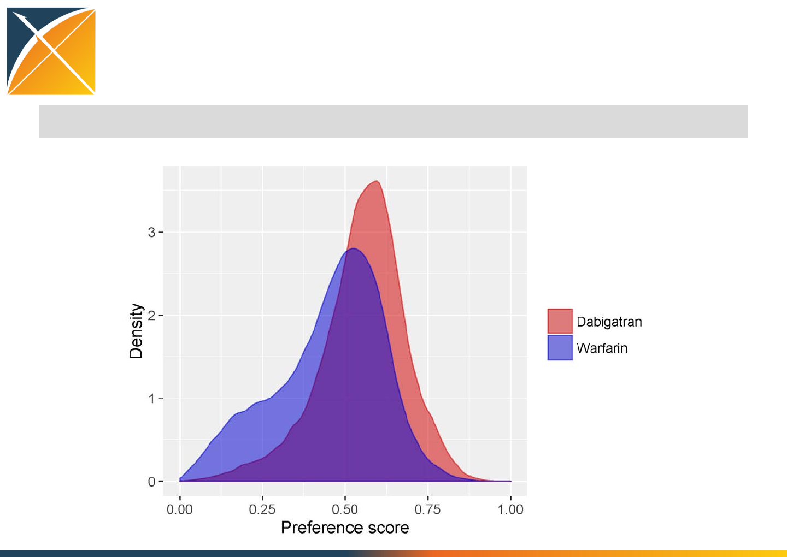
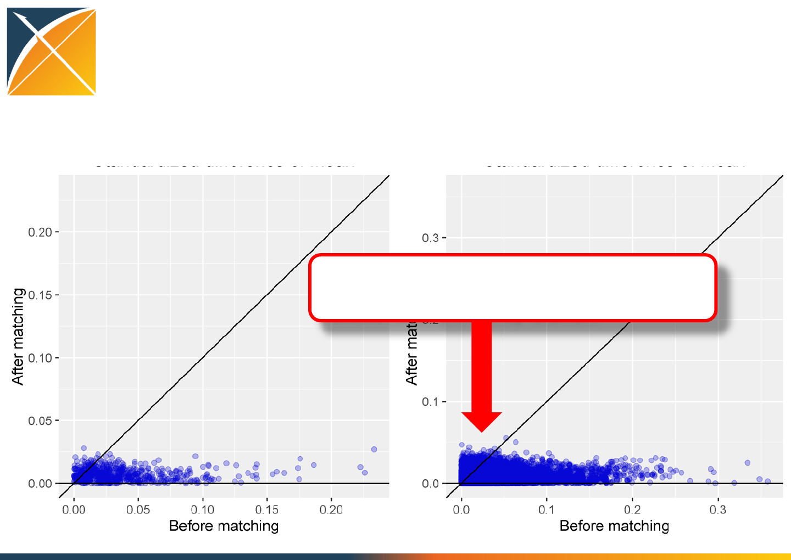

Reproducing Graham et al.
2014 using the CohortMethod
package
Martijn Schuemie
R code for reproducing the study
library(CohortMethod)
library(SqlRender)
connectionDetails <- createConnectionDetails(dbms = "pdw",
server = "JRDUSAPSCTL01",
port = 17001)
cdmDatabaseSchema <- "CDM_Truven_MDCR_V415.dbo"
resultsDatabaseSchema <- cdmDatabaseSchema
exposureTable <- "cohort"
outcomeTable <- "cohort"
cdmVersion <- "5"
options('fftempdir' = 's:/fftemp')
workFolder <- "s:/temp/GrahamStudy"
excludedConcepts <- c()
includedConcepts <- read.csv("inst/csv/GrahamIncludedConcepts.csv")$Concept.ID
covariateSettings <- createCovariateSettings(useCovariateDemographics = TRUE,
useCovariateDemographicsGender = TRUE,
useCovariateDemographicsRace = TRUE,
useCovariateDemographicsEthnicity = TRUE,
useCovariateDemographicsAge = TRUE,
useCovariateDemographicsYear = FALSE,
useCovariateDemographicsMonth = FALSE,
useCovariateConditionOccurrence = TRUE,
useCovariateConditionOccurrence365d = TRUE,
useCovariateConditionOccurrence30d = TRUE,
useCovariateConditionOccurrenceInpt180d = TRUE,
useCovariateConditionEra = FALSE,
useCovariateConditionEraEver = FALSE,
useCovariateConditionEraOverlap = FALSE,
useCovariateConditionGroup = TRUE,
useCovariateConditionGroupMeddra = TRUE,
useCovariateConditionGroupSnomed = FALSE,
useCovariateDrugExposure = FALSE,
useCovariateDrugExposure365d = FALSE,
useCovariateDrugExposure30d = FALSE,
useCovariateDrugEra = TRUE,
useCovariateDrugEra365d = TRUE,
useCovariateDrugEra30d = FALSE,
useCovariateDrugEraOverlap = FALSE,
useCovariateDrugEraEver = FALSE,
useCovariateDrugGroup = TRUE,
useCovariateProcedureOccurrence = FALSE,
useCovariateProcedureOccurrence365d = FALSE,
useCovariateProcedureOccurrence30d = FALSE,
useCovariateProcedureGroup = FALSE,
useCovariateObservation = FALSE,
useCovariateObservation365d = FALSE,
useCovariateObservation30d = FALSE,
useCovariateObservationCount365d = FALSE,
useCovariateMeasurement = FALSE,
useCovariateMeasurement365d = FALSE,
useCovariateMeasurement30d = FALSE,
useCovariateMeasurementCount365d = FALSE,
useCovariateMeasurementBelow = FALSE,
useCovariateMeasurementAbove = FALSE,
useCovariateConceptCounts = FALSE,
useCovariateRiskScores = TRUE,
useCovariateRiskScoresCharlson = FALSE,
useCovariateRiskScoresDCSI = FALSE,
useCovariateRiskScoresCHADS2 = TRUE,
useCovariateRiskScoresCHADS2VASc = FALSE,
useCovariateInteractionYear = FALSE,
useCovariateInteractionMonth = FALSE,
excludedCovariateConceptIds = excludedConcepts,
includedCovariateConceptIds = includedConcepts,
deleteCovariatesSmallCount = 100)
cohortMethodData <- getDbCohortMethodData(connectionDetails = connectionDetails,
cdmDatabaseSchema = cdmDatabaseSchema,
oracleTempSchema = resultsDatabaseSchema,
targetId = 2649,
comparatorId = 2650,
outcomeIds = 2651,
studyStartDate = "",
studyEndDate = "",
exposureDatabaseSchema = resultsDatabaseSchema,
exposureTable = exposureTable,
outcomeDatabaseSchema = resultsDatabaseSchema,
outcomeTable = outcomeTable,
cdmVersion = cdmVersion,
excludeDrugsFromCovariates = FALSE,
covariateSettings = covariateSettings)
saveCohortMethodData(cohortMethodData, file.path(workFolder, "cohortMethodData"))
studyPop <- createStudyPopulation(cohortMethodData = cohortMethodData,
outcomeId = 2651,
firstExposureOnly = FALSE,
washoutPeriod = 0,
removeSubjectsWithPriorOutcome = TRUE,
minDaysAtRisk = 1,
riskWindowStart = 1,
addExposureDaysToStart = FALSE,
riskWindowEnd = 0,
addExposureDaysToEnd = TRUE)
saveRDS(studyPop, file.path(workFolder, "studyPop.rds"))
drawAttritionDiagram(studyPop, treatmentLabel = "Target", comparatorLabel = "Comparator")
ps <- createPs(cohortMethodData = cohortMethodData,
population = studyPop,
control = createControl(cvType = "auto",
startingVariance = 0.01,
noiseLevel = "quiet",
tolerance = 2e-07,
cvRepetitions = 10,
threads = 20))
saveRDS(ps, file.path(workFolder, "ps.rds"))
computePsAuc(ps)
plotPs(ps, treatmentLabel = "Dabigatran", comparatorLabel = "Warfarin", fileName = file.path(workFolder, "ps.png") )
propensityModel <- getPsModel(ps, cohortMethodData)
head(propensityModel)
matchedPop <- matchOnPs(ps, caliper = 0.25, caliperScale = "standardized", maxRatio = 1)
plotPs(matchedPop, ps)
drawAttritionDiagram(matchedPop)
balance <- computeCovariateBalance(matchedPop, cohortMethodData)
plotCovariateBalanceScatterPlot(balance)
plotCovariateBalanceOfTopVariables(balance)
outcomeModel <- fitOutcomeModel(cohortMethodData = cohortMethodData,
population = matchedPop,
stratified = FALSE,
modelType = "cox",
useCovariates = FALSE)
outcomeModel
plotKaplanMeier(matchedPop, treatmentLabel = "Dabigatran", comparatorLabel = "Warfarin", includeZero = FALSE, fileName = file.path(workFolder, "kaplanMeier.png"))
Step 1: Getting the necessary data from
the database
Target and comparator cohorts of interest
Index date
End of cohort eligibility (e.g. end of exposure)
End of observation
Outcome(s) of interest
Dates of occurrence
Covariates
Take as-is from ATLAS

Covariates (Graham et al.)
Graham et al. used several covariates, including
Demographics
Medical history
Various conditions
CHADS
HAS-BLED
Medication use
These were hand-picked for this study
Loading the list of selected covariate
concept IDs
includedConcepts <- read.csv("inst/csv/GrahamIncludedConcepts.csv")$Concept.ID
Covariate settings
covariateSettings <- createCovariateSettings(useCovariateDemographics = TRUE,
useCovariateDemographicsGender = TRUE,
useCovariateDemographicsRace = TRUE,
useCovariateDemographicsEthnicity = TRUE,
useCovariateDemographicsAge = TRUE,
useCovariateDemographicsYear = FALSE,
useCovariateDemographicsMonth = FALSE,
useCovariateRiskScores = TRUE,
useCovariateRiskScoresCharlson = FALSE,
useCovariateRiskScoresDCSI = FALSE,
useCovariateRiskScoresCHADS2 = TRUE,
useCovariateRiskScoresCHADS2VASc = FALSE,
excludedCovariateConceptIds = c(),
includedCovariateConceptIds = includedConcepts,
deleteCovariatesSmallCount = 100)
Including only the concept IDs
we just loaded
Loading all data
cohortMethodData <- getDbCohortMethodData(connectionDetails = connectionDetails,
cdmDatabaseSchema = cdmDatabaseSchema,
targetId = 2649,
comparatorId = 2650,
outcomeIds = 2651,
exposureTable = "cohort",
outcomeTable = "cohort",
cdmVersion = cdmVersion,
excludeDrugsFromCovariates = FALSE,
covariateSettings = covariateSettings)
saveCohortMethodData(cohortMethodData, s:/GrahamStudy/cohortMethodData")
Loading all data
cohortMethodData <- getDbCohortMethodData(connectionDetails = connectionDetails,
cdmDatabaseSchema = cdmDatabaseSchema,
targetId = 2649,
comparatorId = 2650,
outcomeIds = 2651,
exposureTable = "cohort",
outcomeTable = "cohort",
cdmVersion = cdmVersion,
excludeDrugsFromCovariates = FALSE,
covariateSettings = covariateSettings)
saveCohortMethodData(cohortMethodData, s:/GrahamStudy/cohortMethodData")
Using the cohorts generated by ATLAS
Loading all data
cohortMethodData <- getDbCohortMethodData(connectionDetails = connectionDetails,
cdmDatabaseSchema = cdmDatabaseSchema,
targetId = 2649,
comparatorId = 2650,
outcomeIds = 2651,
exposureTable = "cohort",
outcomeTable = "cohort",
cdmVersion = cdmVersion,
excludeDrugsFromCovariates = FALSE,
covariateSettings = covariateSettings)
saveCohortMethodData(cohortMethodData, s:/GrahamStudy/cohortMethodData")
The covariate settings we specified earlier
Inspecting the data
summary(cohortMethodData)
CohortMethodData object summary
Treatment concept ID: 2649
Comparator concept ID: 2650
Outcome concept ID(s): 2651
Treated persons: 19046
Comparator persons: 50918
Outcome counts:
Event count Person count
2651 8063 8063
Covariates:
Number of covariates: 827
Number of non-zero covariate values: 2428813
Step 2: Defining the study population
studyPop <- createStudyPopulation(cohortMethodData = cohortMethodData,
outcomeId = 2651,
removeSubjectsWithPriorOutcome = TRUE,
minDaysAtRisk = 1,
riskWindowStart = 1,
addExposureDaysToStart = FALSE,
riskWindowEnd = 0,
addExposureDaysToEnd = TRUE)
Step 2: Defining the study population
studyPop <- createStudyPopulation(cohortMethodData = cohortMethodData,
outcomeId = 2651,
removeSubjectsWithPriorOutcome = TRUE,
minDaysAtRisk = 1,
riskWindowStart = 1,
addExposureDaysToStart = FALSE,
riskWindowEnd = 0,
addExposureDaysToEnd = TRUE)
Remove subjects with outcomes prior to
index date
Step 2: Defining the study population
studyPop <- createStudyPopulation(cohortMethodData = cohortMethodData,
outcomeId = 2651,
removeSubjectsWithPriorOutcome = TRUE,
minDaysAtRisk = 1,
riskWindowStart = 1,
addExposureDaysToStart = FALSE,
riskWindowEnd = 0,
addExposureDaysToEnd = TRUE)
Define risk window: start on day after index
date, end at end of cohort eligibility (end of
exposure)
Graham: Follow-up began on the day after the first qualifying
anticoagulant prescription fill
Step 3: Creating a propensity model
ps <- createPs(cohortMethodData = cohortMethodData,
population = studyPop)
saveRDS(ps, s:/GrahamStudy/ps.rds")

Plot propensity score distribution
plotPs(ps , treatmentLabel = "Dabigatran", comparatorLabel = "Warfarin")
Step 4: Matching
matchedPop <- matchOnPs(ps,
caliper = 0.25,
caliperScale = "standardized",
maxRatio = 1)
Select up to 1 comparator per target subject
(1-on-1 matching)
Graham: Dabigatran users were propensity score matched to
warfarin users in a 1:1 ratio with the use of a greedy matching
algorithm.
No caliper was mentioned, but it is probably a good idea to use one
Attrition
drawAttritionDiagram(matchedPop , treatmentLabel = "Dabigatran", comparatorLabel = "Warfarin")
Attrition
drawAttritionDiagram(matchedPop , treatmentLabel = "Dabigatran", comparatorLabel = "Warfarin")
Cohorts as selected by ATLAS
Attrition
drawAttritionDiagram(matchedPop , treatmentLabel = "Dabigatran", comparatorLabel = "Warfarin")
Study population that will go into Cox
regression
Covariate balance
balance <- computeCovariateBalance(matchedPop, cohortMethodData)
plotCovariateBalanceScatterPlot(balance)
Most covariates are binary:
abs(Ptarget group Pcomparator group)
standard deviation
Graham: A standardized mean difference of 0.1 indicates a
negligible difference.
Step 5: Fitting the outcome model
outcomeModel <- fitOutcomeModel(population = matchedPop,
modelType = "cox",
stratified = FALSE,
useCovariates = FALSE)
Graham: Cox proportional hazards regression was used to compare time to
event in dabigatran compared with warfarin (reference) cohorts.
Ambiguous: Did they condition the model on the matched set
(recommended)?
Inspect the outcome model
summary(outcomeModel)
Model type: cox
Stratified: FALSE
Use covariates: FALSE
Status: OK
Estimate lower .95 upper .95 logRr seLogRr
treatment 0.89626 0.71863 1.11829 -0.10952 0.1128
Population counts
treatedPersons comparatorPersons treatedExposures comparatorExposures
Count 17460 17460 17460 17460
Outcome counts
treatedPersons comparatorPersons treatedExposures comparatorExposures
Count 164 155 164 155
Time at risk
treatedDays comparatorDays
Days 4912947 3954046
Inspect the outcome model
summary(outcomeModel)
Model type: cox
Stratified: FALSE
Use covariates: FALSE
Status: OK
Estimate lower .95 upper .95 logRr seLogRr
treatment 0.89626 0.71863 1.11829 -0.10952 0.1128
Population counts
treatedPersons comparatorPersons treatedExposures comparatorExposures
Count 17460 17460 17460 17460
Outcome counts
treatedPersons comparatorPersons treatedExposures comparatorExposures
Count 164 155 164 155
Time at risk
treatedDays comparatorDays
Days 4912947 3954046
Point estimate and 95% confidence interval
Inspect the outcome model
summary(outcomeModel)
Model type: cox
Stratified: FALSE
Use covariates: FALSE
Status: OK
Estimate lower .95 upper .95 logRr seLogRr
treatment 0.89626 0.71863 1.11829 -0.10952 0.1128
Population counts
treatedPersons comparatorPersons treatedExposures comparatorExposures
Count 17460 17460 17460 17460
Outcome counts
treatedPersons comparatorPersons treatedExposures comparatorExposures
Count 164 155 164 155
Time at risk
treatedDays comparatorDays
Days 4912947 3954046
Target group (dabigatran) has more
outcomes, but also more time at risk
Inspect the outcome model
summary(outcomeModel)
Model type: cox
Stratified: FALSE
Use covariates: FALSE
Status: OK
Estimate lower .95 upper .95 logRr seLogRr
treatment 0.89626 0.71863 1.11829 -0.10952 0.1128
Population counts
treatedPersons comparatorPersons treatedExposures comparatorExposures
Count 17460 17460 17460 17460
Outcome counts
treatedPersons comparatorPersons treatedExposures comparatorExposures
Count 164 155 164 155
Time at risk
treatedDays comparatorDays
Days 4912947 3954046
Graham:
IRdabigatran = 11.3
IRwarfarin = 13.9
HRadjusted = 0.80 (0.670.96)
IRdabigatran = 12.2
IRwarfarin = 14.3
HRadjusted = 0.90 (0.72 1.12)
Kaplan Meier plot
plotKaplanMeier(matchedPop,
treatmentLabel = "Dabigatran",
comparatorLabel = "Warfarin,
includeZero = FALSE)
Kaplan Meier plot
plotKaplanMeier(matchedPop,
treatmentLabel = "Dabigatran",
comparatorLabel = "Warfarin,
includeZero = FALSE)
Graham:

Execution steps
1. Getting the necessary data from the database
2. Defining the study population
3. Creating a propensity model
4. Matching
5. Fitting the outcome model
+ generating various diagnostics

Handpicking covariates is not
recommended!
Might miss an important confounder (proxy)
Subjective (non-reproducible)
Better:
Include all pre-defined covariates
Let data (and regularization) decide which
ones are important
Bonus: more work for the computer, but less
work for you!
Covariate settings
covariateSettings <- createCovariateSettings(useCovariateDemographics = TRUE,
useCovariateConditionOccurrence = TRUE,
useCovariateConditionOccurrence365d = TRUE,
useCovariateConditionOccurrence30d = TRUE,
useCovariateConditionOccurrenceInpt180d = TRUE,
useCovariateRiskScores = TRUE,
useCovariateRiskScoresCharlson = TRUE,
useCovariateRiskScoresDCSI = TRUE,
useCovariateRiskScoresCHADS2 = TRUE,
useCovariateInteractionYear = FALSE,
useCovariateInteractionMonth = FALSE,
excludedCovariateConceptIds = excludeConceptIds,
deleteCovariatesSmallCount = 100)
Covariate settings
covariateSettings <- createCovariateSettings(useCovariateDemographics = TRUE,
useCovariateConditionOccurrence = TRUE,
useCovariateConditionOccurrence365d = TRUE,
useCovariateConditionOccurrence30d = TRUE,
useCovariateConditionOccurrenceInpt180d = TRUE,
useCovariateRiskScores = TRUE,
useCovariateRiskScoresCharlson = TRUE,
useCovariateRiskScoresDCSI = TRUE,
useCovariateRiskScoresCHADS2 = TRUE,
useCovariateInteractionYear = FALSE,
useCovariateInteractionMonth = FALSE,
excludedCovariateConceptIds = excludeConceptIds,
deleteCovariatesSmallCount = 100)
Constructing covariates for
Demographics
All drugs & classes
All conditions & groups
All procedures
All measurements
All observations
Risk scores
Covariate settings
covariateSettings <- createCovariateSettings(useCovariateDemographics = TRUE,
useCovariateConditionOccurrence = TRUE,
useCovariateConditionOccurrence365d = TRUE,
useCovariateConditionOccurrence30d = TRUE,
useCovariateConditionOccurrenceInpt180d = TRUE,
useCovariateRiskScores = TRUE,
useCovariateRiskScoresCharlson = TRUE,
useCovariateRiskScoresDCSI = TRUE,
useCovariateRiskScoresCHADS2 = TRUE,
useCovariateInteractionYear = FALSE,
useCovariateInteractionMonth = FALSE,
excludedCovariateConceptIds = excludeConceptIds,
deleteCovariatesSmallCount = 100)
Have to explicitly exclude
dabigatran and warfarin

Effect on propensity score distribution
Using hand-picked covariates Using all covariates
Whole subgroup of people likely to get warfarin was not identified
by Graham
Effect on matching
Using hand-picked covariates Using all covariates
Fewer people left after matching

Effect on balance
Using hand-picked covariates Using all covariates
Balanced on every covariate, including
those hand-picked by Graham
Effect on hazard ratio
Using hand-picked covariates Using all covariates
HR = 0.90 (0.72 1.12) HR = 0.95 (0.75 - 1.21)
In this case, effect on estimate is small

Conclusions
OHDSI tools can replicate the Graham study
Diagnostics are an important part of both design
and execution
Show impact of adjustments: lots of inbalance before
matching
Lot of attrition: how generalizable are our results?
Hand picking covariates is not recommended
Including negative controls is recommended